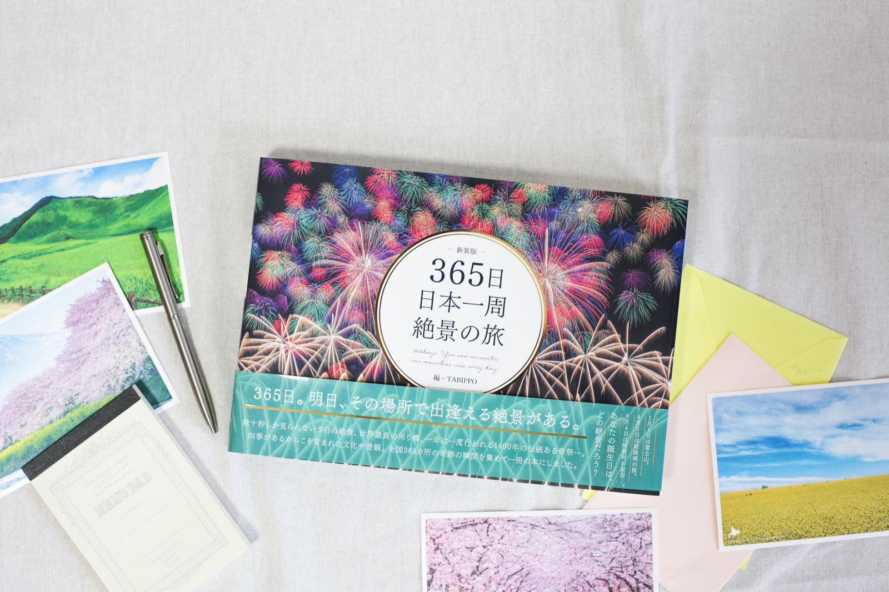
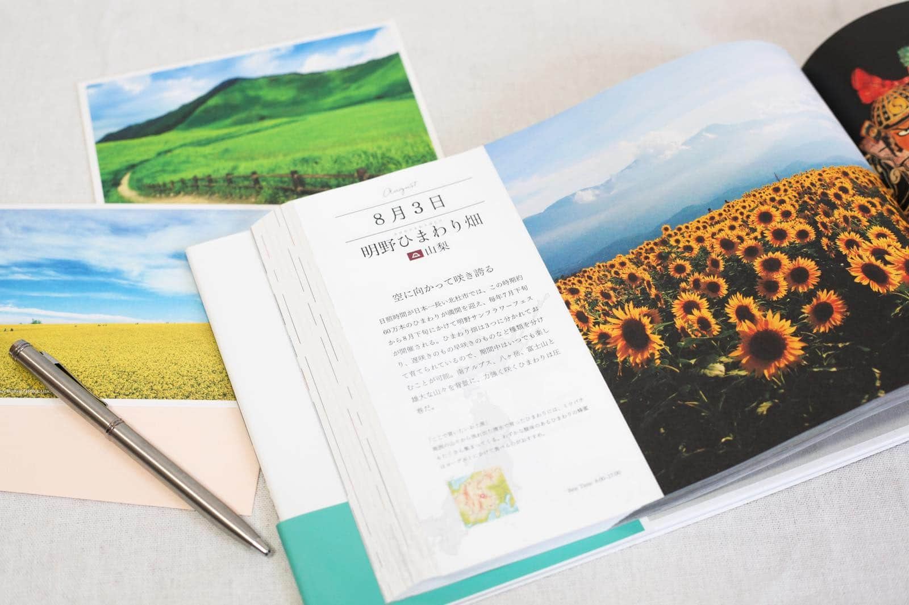
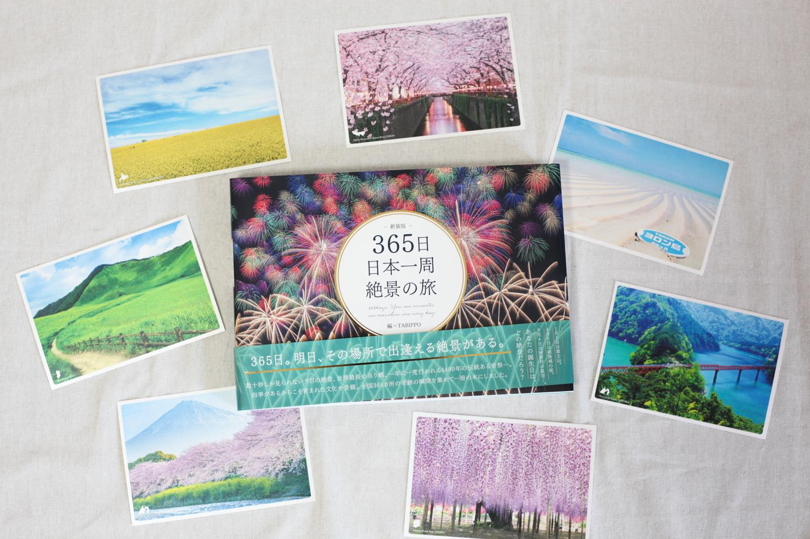
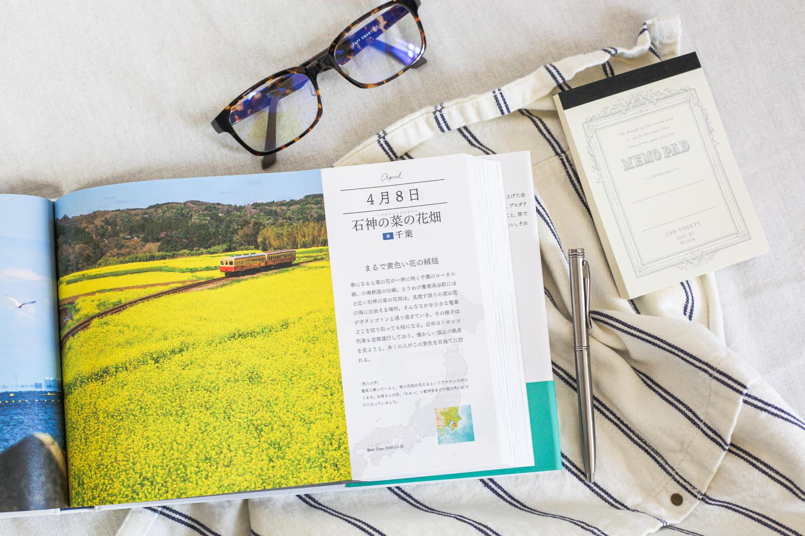
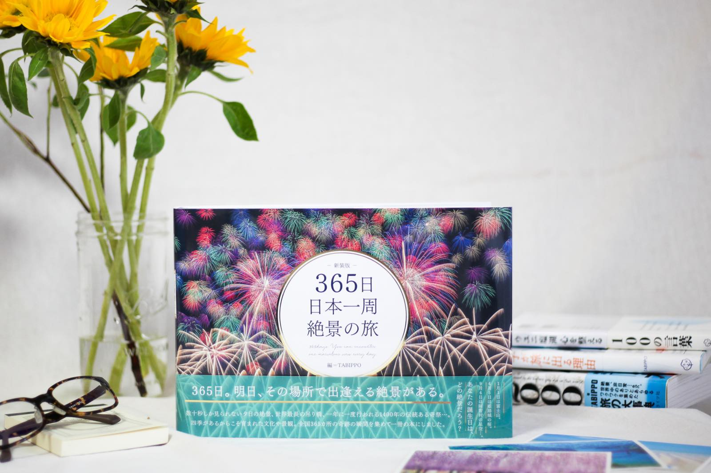

自宅にいるだけで日本一周！書籍「365日 日本一周 絶景の旅」で景色に癒やされる時間を
PAS-POLの人気書籍「365日日本一周絶景の旅」が、表紙と一部紙面が新しくなり新装版として販売が開始されたことをお知らせいたします。
「365日 日本一周 絶景の旅 新装版」はどんな書籍？
「世界一周ができる本も素敵だけど、日本にももっと素晴らしい絶景があるはず」と、日本中から365ヶ所の絶景をたくさんの旅人の方の協力のもと、日本だからこそ実現できる明日出逢える景色を集めた書籍を制作しました。
「もっと日本を旅したい」「素晴らしい景色を見てみたい」そんな想いを実現するために、2016年に発売開始となりました。今回は表紙がリニューアルし日本の世界遺産に認定されているスポットが追加となり、新装版としての販売となります。
【書籍概要】
- 商品名：「365日 日本一周 絶景の旅 新装版」
- 出版社：いろは出版
- 編 集：TABIPPO
- 価 格：3,400円（税別）
- 販売場所：全国の主要書店、 PAS-POL公式オンラインショップ、Amazon
書籍へのこだわり
①リアルな言葉で綴られた、「旅人の声」
実際にその地を訪れたからこそ、お伝えできるリアルなこと。この場所で食すべきグルメやお土産。絶景に出逢えた時の感動した気持ち。リアルな旅人達の声により、このページは完成しました。
②Best Timeを記載
絶景を目にすることができるベストタイムを記載しています。ガイドブックとしても参考にしてもらいながら、素敵な旅を計画してもらえたら嬉しいです。
③各都道府県の県章
絶景の名称の下には都道府県が描かれていてその隣に、県章が。さりげないアクセントになっています。
この本に込めたPAS-POLの想い
掲載されている写真の多くは、旅人たちが実際にその場所に行って撮った写真です。きっと、「こんな絶景を多くの人に知ってもらいたい。」「日本にはもっともっと素敵な景色があることを知ってもらいたい。」そんな気持ちでシャッターを押していたのではないでしょうか。
その想いは次の旅人へ受け継がれます。この写真集を手にしている皆さんです。旅人が次の旅人を創り出す。旅人から旅人へのバトンになるような1冊になれば嬉しいです。
あなたが生まれた日の絶景は？
あなたが生まれた日、家族が生まれた日、大切な人が生まれた日。その日は一体どんな絶景でしょうか。
大切な日に載っている絶景を、大切な人と一緒に見に行く。この本が日本中の素晴らしい絶景と皆さんの距離を縮めて、旅するきっかけになれば嬉しいです。
家で日本中の景色を楽しもう
ご自身でご覧いただくのはもちろん、早く旅に出たくてうずうずしている友人に、いつも一番の良き理解者である家族に。日本の絶景が多く掲載されているので、なかなか会えない祖父母の方へのプレゼントにも喜ばれるはずです。そして、一緒にこの景色を見て感動を共有したい、あの人にプレゼントとして贈ってみてはいかがでしょうか。
この本を手にした瞬間、笑顔溢れる表情が思い浮かびます。1ページ目を開けば、365日の旅がスタートします。日本の景色を楽しむとともに、また旅ができるようになった時のために行きたい場所をチェックして旅欲をあたためていただければと思います。
ぜひ、とびきりの絶景に出会う日本一周の旅へ出かけてみてください！